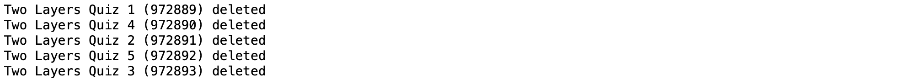
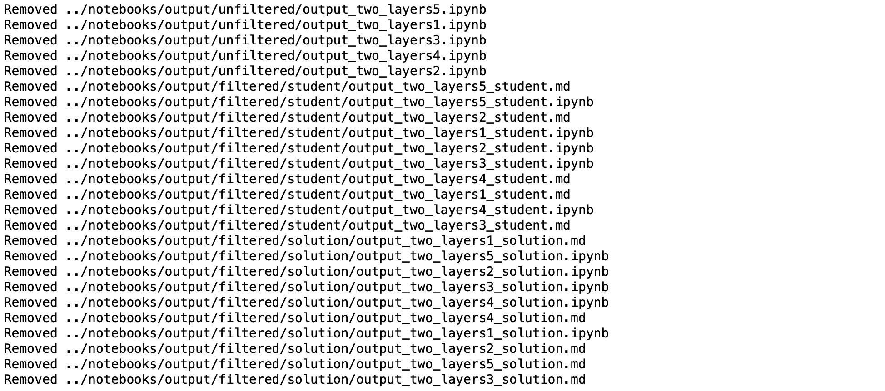
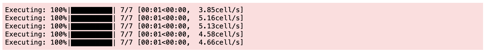
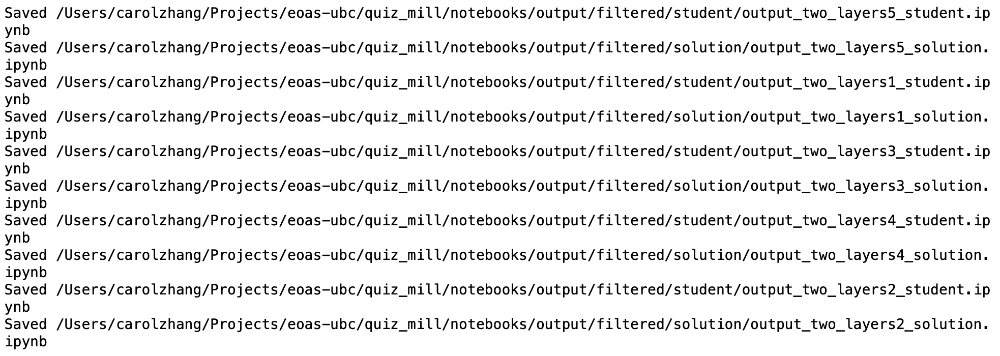
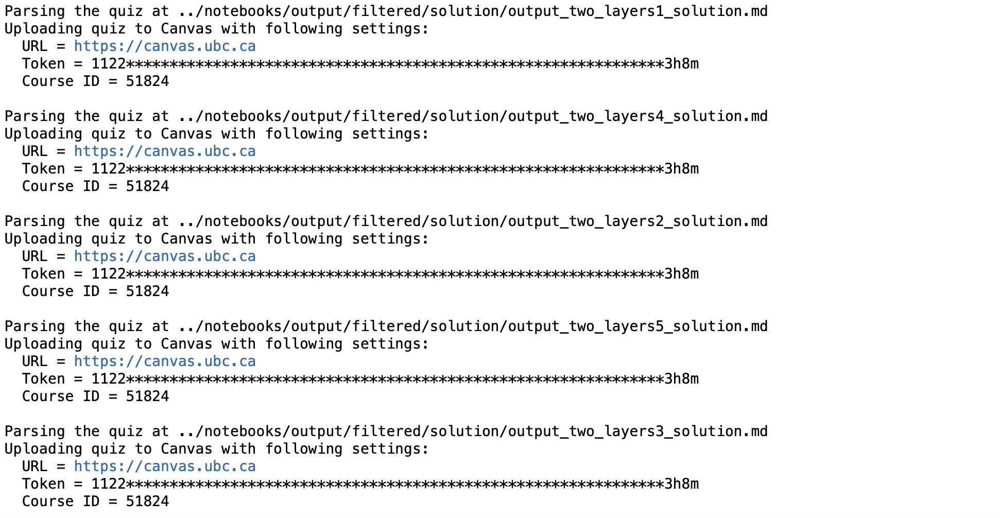

Convert Jupyter notebooks to Canvas quizzes¶
This guide shows you how you go from Jupyter notebooks to generating multiple quizzes and sending them to Canvas. The following steps allow you to run the commands in the notebook (on a JupyterHub), but simply copy and paste the commands in your terminal if running on your local machine.
Prerequisites:¶
Must have the Canvas API token
Must have the base notebook
Step 1: Remove any old “Two Layers” quizzes from Canvas (if applicable)¶
Run the following cell:
%%bash
remove -v ..
Output should be similar to the following:¶

Step 2: Remove any old notebooks from output/ folder (if applicable)¶
Run the following cell:
%%bash
clean -v
Output should be similar to the following:¶

Step 3: Generate N notebooks with random parameters¶
Run the following cell:
%%bash
N=5
generate -n $N notebooks/
Expected output:¶

Step 4: Filter notebooks into student and solution notebook versions¶
Run the following cell:
%%bash
filter -v notebooks/output
Expected output:¶

Step 5: Send solution notebooks as quizzes to Canvas¶
Run the following cell:
%%bash
send -c 51824 -v notebooks/output/filtered/solution/
Expected output:¶
